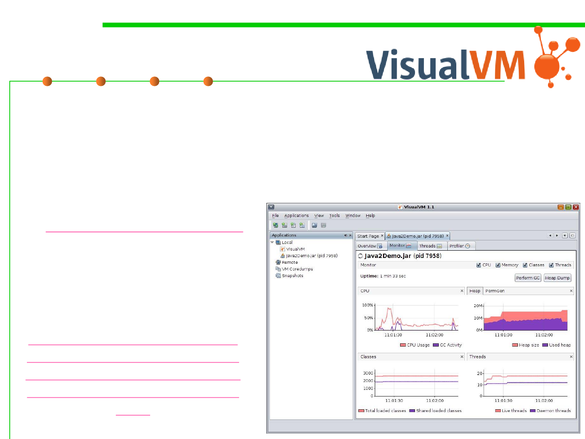

VisualVM
8.2 Dynamic Program Analysis Methods and Tools
▪ VisualVM is a tool that provides a visual interface for viewing
detailed information about Java applications while they are
running on a JVM
▪ It uses various technologies including jvmstat, JMX, Serviceability
Agent (SA) and Attach API.
▪ https://visualvm.github.io/
Profiling Applications by
VisualVM
https://htmlpreview.github.io/
?https://raw.githubusercontent.
com/visualvm/visualvm.java.ne
t.backup/master/www/profiler
.html